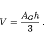
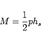

Pyramide wird ein Polyeder genannt, dessen Grundfläche ein Vieleck ist und dessen Seitenflächen Dreiecke sind, die in einem Punkt, der Spitze, zusammenlaufen.
Pyramiden heißen gerade, wenn der Fußpunkt des Lotes von der Spitze auf die Grundfläche AG deren Mittelpunkt ist, regulär, wenn die Grundfläche ein regelmäßiges Vieleck ist (linke Abbildung) und n-seitig, wenn die Grundfläche ein n-Eck ist (rechte Abbildung). Zusammen mit der Grundfläche hat die Pyramide (n+1) Flächen. Für das Volumen gilt
|  | (3.131) |
Wenn es sich um eine reguläre Pyramide handelt, dann ist die Mantelfläche
|  | (3.132) |
mit p als Umfang der Grundfläche und hs als Höhe einer Seitenfläche.